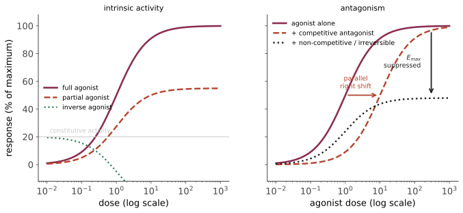

本页目录
药理 II · 药效学：受体、量效与治疗窗
药效学回答的是"给这么多药，会产生多大效应"。它的骨架是一条双曲线（或半对数坐标下的 S 形），而几乎所有药物分类术语——激动剂、部分激动剂、竞争性/非竞争性拮抗、效价、效能——都是这条曲线上的几何特征。
1. 受体占据理论
最简模型：药物 \(D\) 与受体 \(R\) 可逆结合。
平衡时占据分数
这是一条双曲线；当 \([D] = K_D\) 时恰好占据一半受体。若效应正比于占据率，则
在半对数坐标（横轴取 \(\log[D]\)）下，这条双曲线变成对称的 S 形曲线——这就是量效曲线的标准画法，也是它总以对数横轴呈现的原因。
两个独立的参数不要混淆：
- 效价 potency（\(EC_{50}\) 或 \(ED_{50}\)）：达到半数效应所需剂量。曲线左右位置。效价高只意味着用量小，不意味着更好；
- 效能 efficacy（\(E_{max}\)）：能达到的最大效应。曲线高低。效能才是临床上通常真正关心的。
一个常被弄错的临床例子：呋塞米的效能高于氢氯噻嗪（能排出更多钠，故用于心衰急性期）；而说某药"效价是另一药的 10 倍"只是说毫克数不同——这就是为什么比较不同他汀或不同阿片时必须用等效剂量表而不是毫克数。
2. 激动剂与拮抗剂的完整谱系

| 类型 | 内在活性 | 行为 | 例 |
|---|---|---|---|
| 完全激动剂 | 1 | 达到最大效应 | 吗啡 |
| 部分激动剂 | 0 < a < 1 | \(E_{max}\) 有上限；在完全激动剂存在时表现为拮抗 | 丁丙诺啡、阿立哌唑、沙丁胺醇（对 β 受体是部分激动） |
| 拮抗剂 | 0 | 无自身效应 | 纳洛酮、普萘洛尔 |
| 反向激动剂 | < 0 | 低于组成性活性 | 部分抗组胺药、β 阻滞剂（某些） |
部分激动剂的临床意义极大：丁丙诺啡的 \(E_{max}\) 有天花板 → 呼吸抑制风险低于完全激动剂 → 适合阿片使用障碍的替代治疗；但它对受体亲和力极高，会把已在受体上的完全激动剂顶下来 → 在依赖者中诱发戒断。"部分激动 = 弱激动 + 强拮抗"这句话把两个后果都概括了。
竞争性 vs 非竞争性拮抗——决定解毒策略：
- 竞争性、可逆（纳洛酮对阿片、氟马西尼对苯二氮䓬）：平行右移，可被高浓度激动剂克服 → 大剂量中毒时需要更大剂量的拮抗剂并重复给药（纳洛酮半衰期短于多数阿片，这是"救回来后又复昏迷"的原因）；
- 不可逆/非竞争性（阿司匹林对 COX、苯氧苄胺对 α 受体、奥美拉唑对 H⁺/K⁺-ATP 酶）：\(E_{max}\) 被压低，加多少激动剂都无用。恢复必须靠新合成蛋白 → 阿司匹林的抗血小板作用持续血小板整个寿命（7–10 天）而非其血浆半衰期（数十分钟）。
这一条是药效学最有实用价值的推论：作用时程由结合性质决定，不总是由半衰期决定。
3. 剂量-反应的群体形式与治疗指数
上面讲的是量反应（graded）——单个体的效应随剂量连续变化。另有质反应（quantal）：群体中出现某个"全或无"结果的比例。由此定义：
- \(ED_{50}\)：50% 个体出现疗效的剂量；
- \(TD_{50}\)：50% 出现毒性的剂量；
- \(LD_{50}\)：50% 死亡（动物实验）。
TI 是一个平均意义上的安全边界，实践中更保守的指标是"治疗窗"：\(TD_{1}\) 与 \(ED_{99}\) 之间的距离。窄治疗指数药物——华法林、地高辛、锂、苯妥英、茶碱、氨基糖苷、免疫抑制剂——正是第 13 页需做 TDM 的那份名单。两页给出的是同一份名单的两个理由：PK 上难预测，PD 上没余量。
4. 受体的四大超家族（决定起效速度）
| 类型 | 时间尺度 | 机制 | 例 |
|---|---|---|---|
| 配体门控离子通道 | 毫秒 | 直接开孔 | 烟碱型 ACh 受体、GABA_A（苯二氮䓬与巴比妥的靶点）、NMDA |
| G 蛋白偶联受体 GPCR | 秒 | Gs（cAMP↑）、Gi（cAMP↓）、Gq（IP₃/DAG → Ca²⁺） | 药物靶点中占比最大的一类：肾上腺素能、毒蕈碱、阿片、组胺、5-HT |
| 酶联受体 | 分钟–小时 | 酪氨酸激酶、鸟苷酸环化酶 | 胰岛素受体、生长因子受体、心房钠尿肽受体 |
| 核受体 | 小时–天 | 改变基因转录 | 糖皮质激素、甲状腺激素、性激素、维生素 D |
这张表的实用价值：起效与失效速度由受体类型决定。糖皮质激素的抗炎作用需数小时（转录），所以哮喘急性发作必须先用 β₂ 激动剂（GPCR，秒级）——激素同时给，但不能指望它救急。同理，甲状腺激素调整后需数周才能重新评估。
GPCR 的三条 G 蛋白通路值得单独记牢，因为整个自主神经药理都建立其上：
- Gs（β₁、β₂、D₁、H₂）→ 腺苷酸环化酶 ↑ → cAMP ↑ → PKA；
- Gi（M₂、α₂、D₂、μ 阿片）→ cAMP ↓；
- Gq（α₁、M₁/M₃、H₁、V₁、AT₁）→ 磷脂酶 C → IP₃ + DAG → 胞内 Ca²⁺ ↑ → 平滑肌收缩/腺体分泌。
记住"α₁ 是 Gq → 血管收缩"与"β₂ 是 Gs → 平滑肌舒张"，第 15–16 页大半药理就能自己推。
5. 受体调节：耐受、脱敏与反跳
下调（downregulation）与脱敏：持续激动 → 受体磷酸化（GRK）、β-arrestin 结合、内吞降解 → 耐受。上调：长期拮抗 → 受体数目增加 → 停药后对内源性配体超敏 = 反跳。
三个必须记住的临床后果：
- β 阻滞剂骤停 → 反跳性心动过速与心绞痛恶化，可诱发心梗 → 必须逐步减量；
- 可乐定（α₂ 激动剂）骤停 → 反跳性高血压危象；
- 长期糖皮质激素抑制 HPA 轴 → 骤停致肾上腺危象 → 必须逐渐减量并在应激时加量。
"停药方式本身是治疗的一部分"——这条来自受体调节，不是经验之谈。
快速耐受（tachyphylaxis）：数分钟到数小时内效应急剧下降（如麻黄碱耗竭递质储备、硝酸酯类连续使用产生耐药 → 需安排每日无硝酸酯间期）。
6. 药物相互作用的 PD 分类
协同 vs 相加 vs 拮抗：
- 相加：\(1+1=2\)（两种 NSAIDs）；
- 协同：\(1+1>2\)。例：磺胺 + 甲氧苄啶（序贯阻断同一通路）、β-内酰胺 + 氨基糖苷（前者破壁促进后者进入）；
- 增效（potentiation）：本身无效但增强另一药。例：克拉维酸 + 阿莫西林；
- 拮抗：抑菌药 + 杀菌药（如四环素 + 青霉素：β-内酰胺需细菌处于繁殖期）。
危险的 PD 叠加（临床上最常出事的组合）：
| 组合 | 后果 |
|---|---|
| 多种抗胆碱药（抗组胺 + 三环类 + 某些抗帕金森药） | 谵妄、尿潴留、便秘、老年跌倒 |
| 多种中枢抑制药（阿片 + 苯二氮䓬 + 酒精） | 呼吸抑制致死——这是阿片相关死亡的最常见共同因素 |
| 多种延长 QT 药（大环内酯 + 氟喹诺酮 + 某些抗精神病药 + 昂丹司琼） | 尖端扭转型室速 |
| 多种5-HT 能药（SSRI + 曲马多 + 利奈唑胺 + 曲坦类） | 5-羟色胺综合征（高热、肌阵挛、自主神经不稳） |
| RAAS 抑制 + 保钾利尿 + NSAID | 高钾血症 + 急性肾损伤（第 04 页的"三重打击"） |
多重用药（polypharmacy）本身是一个独立风险因素：相互作用数量随药物数组合式增长（\(n\) 种药有 \(\binom{n}{2}\) 对）。"去处方（deprescribing）"是老年医学中有证据支持的干预，🔗 从症状到决策站第 16、24 页有讨论。
7. 从量效曲线读临床决策
把本页收成三条可直接用的判断：
- 看到"加大剂量无效" → 想到部分激动剂的天花板、不可逆拮抗、或已达 \(E_{max}\) 平台。继续加量只增加毒性，不增加疗效——这是剂量爬坡必须有终点的药理学理由；
- 看到"作用时间与半衰期不符" → 想到不可逆结合（阿司匹林、PPI、MAOI）或活性代谢物；
- 看到"停药后症状比治疗前更重" → 想到受体上调造成的反跳，而不是"病加重了"。
下两页进入各论。药理各论的信息量最大，但只要牢牢握住"受体类型 + G 蛋白通路 + 上面这条曲线"，绝大部分可以推导而非背诵。